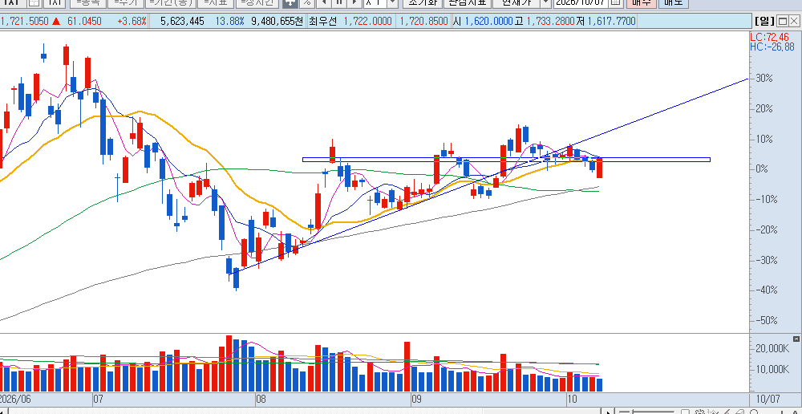

저라인 못뚫으면 뒤지는거임 추세이탈 하락 저점 이탈 다시 회복 매물대 쳐맞는구간 종가로 위로 들어올리고 저점을 다음구간에서 올려주면 위로가는거고 저기 쳐맞고 저점 또 이탈시키면 사망

속스는 치면 안돼나요?
캬 샌디 램즈...
이전에 1616 언급주셧엇는데 신기하네요 딱반등
마이크론도 마찬가지 1060~1070
크헣
ㅋㅋㅋㅋㅋㅋㅋㅋ 일주일이면 반려주임
매번 똑같은거 알려주는거도 힘들겠노..
장투는 2일 ㅋㅋㅋㅋㅋㅋㅋㅋㅋㅋㅋ
야밤에 귀한 강의 감사합니다~ 봐도봐도 신기
강의 감사합니다 ~~